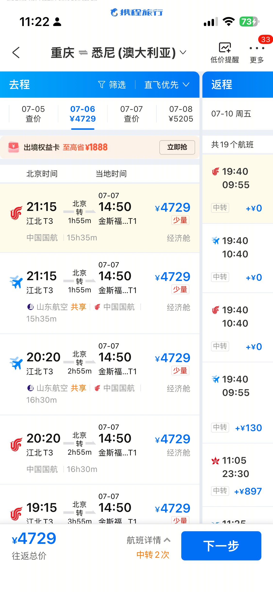
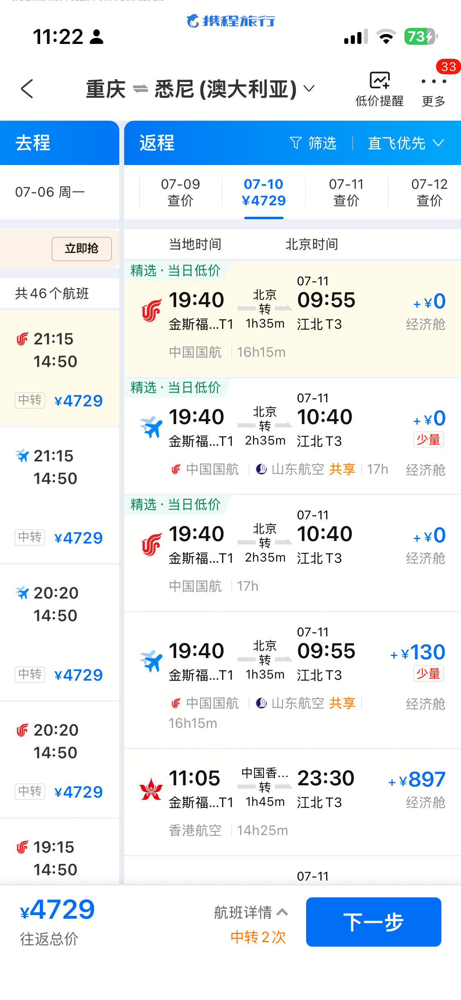
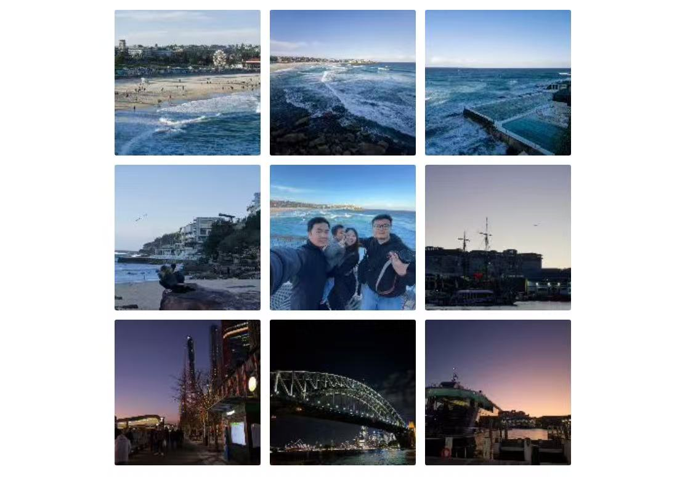
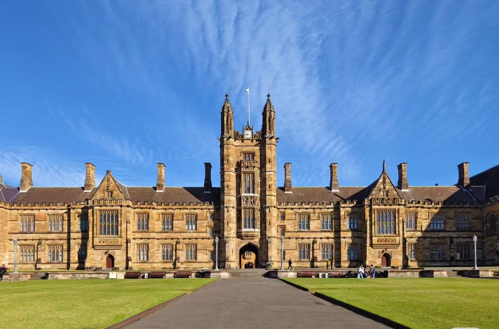
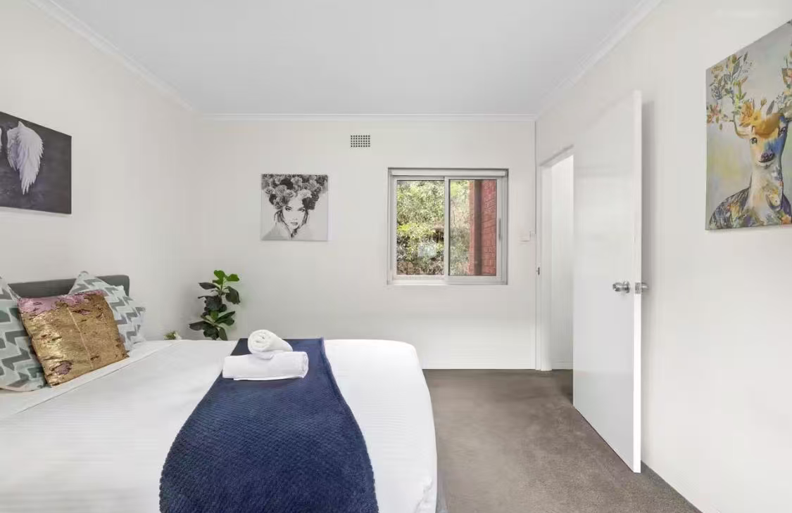
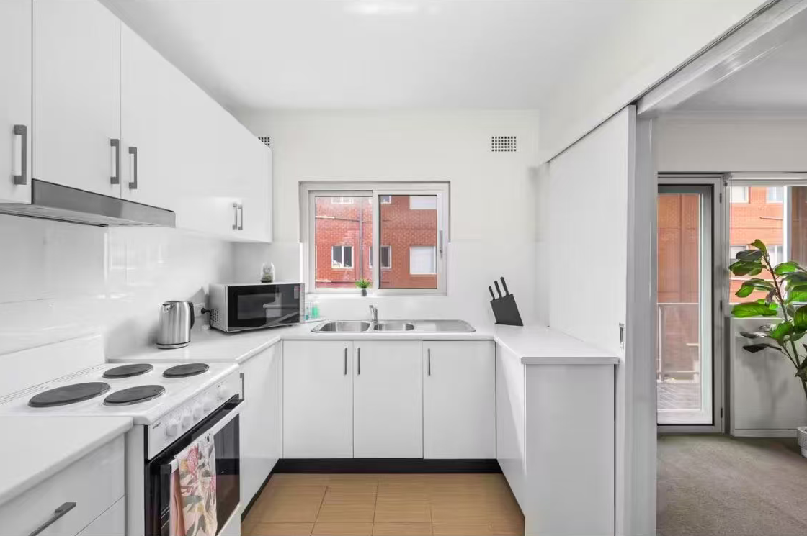
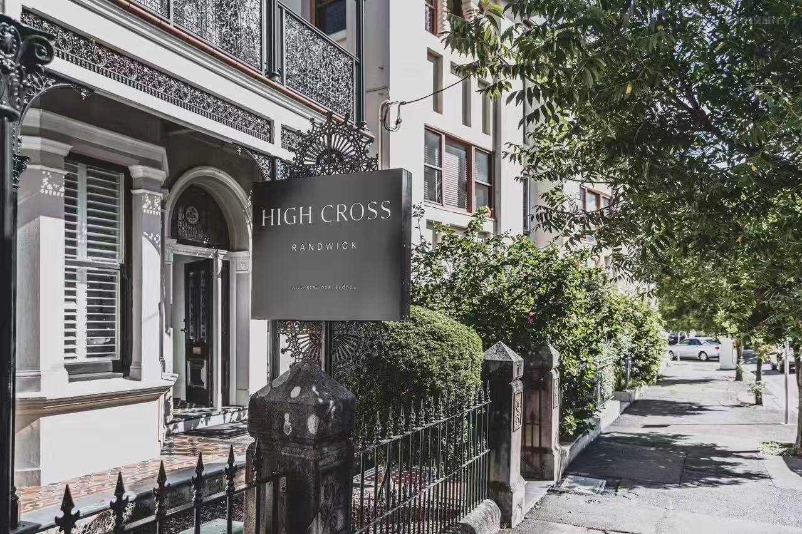
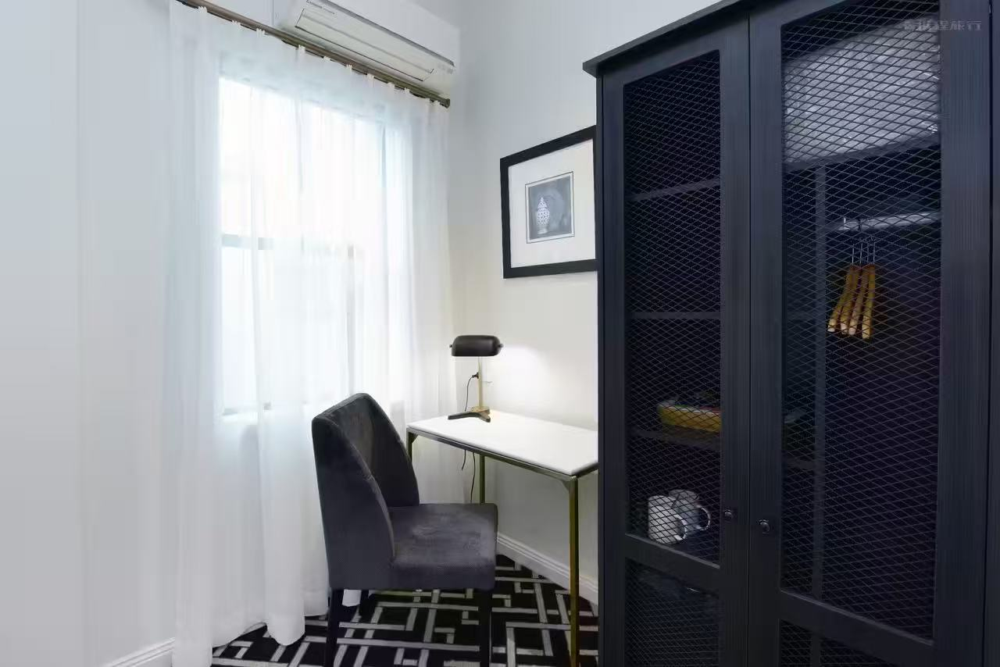
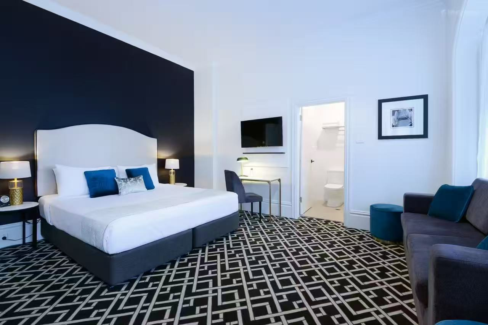

抵达悉尼 · 朋友接风 🚗
14:50 抵悉尼机场，当地朋友开车来接，带逛市区初览：歌剧院外观 → 海港大桥 → The Rocks，晚上一起吃饭。入住酒店。
DigitalFUTURES 计算设计与机器人建造国际会议
🌏 重庆 → 北京 → 悉尼 · 7/7 – 7/10


💰 HY 往返约 ¥4,700 · 含国内+国际联程
14:50 抵悉尼机场，当地朋友开车来接，带逛市区初览：歌剧院外观 → 海港大桥 → The Rocks，晚上一起吃饭。入住酒店。

👫 一对真实夫妻，很靠谱
会议 9:00–17:00 @ UNSW Red Centre。可全天参会，或只在自己感兴趣的场次出席，其余时间自由探索：Bondi Beach / 市区。
同上。下午若溜出来，推荐 Circular Quay 乘渡轮 → Taronga Zoo，或 Darling Harbour 闲逛。
上午参会或自由活动。下午 16:30 前回酒店取行李 → 17:00 到机场 → 19:40 起飞回国。

| ✈️ 往返机票（重庆 ⇄ 悉尼经北京） | ¥4,700 |
| 🛂 澳大利亚签证 Subclass 600 | ~¥1,000 |
| 🍽️ 餐饮 4天（与 ZY share） | ~¥280 × 4 ≈ ¥1,120 |
| 🚃 市内交通（Opal 卡） | ~A$15/天 × 4 ≈ ¥280 |
| 📊 HY 个人合计 | 约 ¥7,100 |
* 住宿由 ZY 安排，不计入 HY 费用。游玩门票另计（观鲸 ~A$69、Taronga Zoo ~A$46、蓝山 Scenic World ~A$55）。
3晚（7/7 – 7/10）· 近 UNSW · 两种方案可选





七月冬季 8–18°C · 晴爽少雨 · 🐋 座头鲸迁徙高峰 · 点击卡片跳转 Google Maps
🖱️ 点击任意景点卡片 → 跳转 Google Maps 查看位置与导航
| 🛂 | 签证 | 尽快办！距出发不到一个月了 · 官网申请 → |
| 💳 | 支付 | A$1 ≈ ¥4.7 · 全城可刷卡/Apple Pay · 备 Visa/Mastercard |
| 🚃 | 交通 | 机场买 Opal Card · 轻轨/火车/公交/渡轮通用 · 日封顶 A$16.80 |
| 📱 | 网络 | 机场 Telstra/Optus 预付 SIM · 或 Airalo eSIM |
| 🌡️ | 穿衣 | 7月 8–18°C · 薄羽绒+毛衣+围巾 · 洋葱穿搭 · 晴天紫外线仍强 |
| 🔌 | 电源 | 八字三孔 230V · 带转换插头+排插 |
| ⏰ | 时差 | 悉尼比北京快 2h · 北京 12:00 = 悉尼 14:00 |
| 🍽️ | 美食 | Kingsford 中餐密集 · 必试 Flat White · TripAdvisor → |